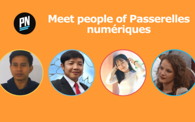
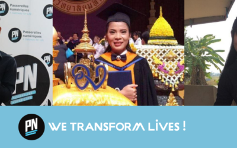
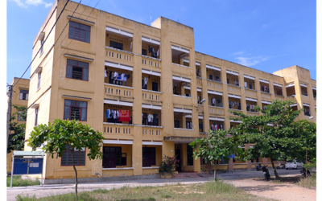
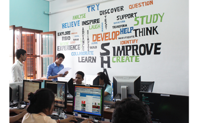

Welcome my Photos of students at PNC

7 May 2020
In these perplexing times, it is more important than ever to bond and focus on people, our families, our relatives and our friends; but maybe it is also the perfect time to open ourselves to outsiders, people in need or actors of change. We are pleased to present... read more

Manulife Cambodia and PN Cambodia during the donation of bikes and helmets event Over the year, Passerelles numériques Cambodia (PNC) was able to count on a growing number of partners for student sponsorships, in-kind donations and skills development support to build... read more

27 Nov 2018
In October every year, an integration week is organised by the PN Cambodia Education Team to welcome the new students, who come from different provinces, and to prepare them for their PN journey. After 8 months of a fair and rigorous Selection Process in 10 provinces... read more

7 May 2020
In these perplexing times, it is more important than ever to bond and focus on people, our families, our relatives and our friends; but maybe it is also the perfect time to open ourselves to outsiders, people in need or actors of change. We are pleased to present... read more

27 Aug 2017
It’s PNV version 2.0! New training partner, new center, new dormitory: it’s all about novelty, showing our flexibility and capacity to adapt to the new context’s requirements. Join us in this new adventure! New training partner Due to changes in the Vietnamese... read more

27 Aug 2017
A new Lab opening soon in Cambodia! Full of advanced IT equipment, it will enable students to use brand new technologies with a learn-by-doing methodology. The two-year Project sponsored by ANZ Royal Bank is progressing well. We envision this project to be completed... read more